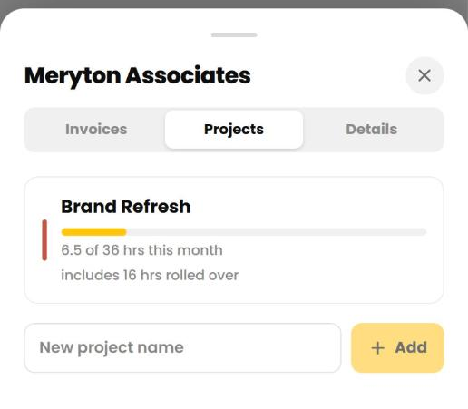
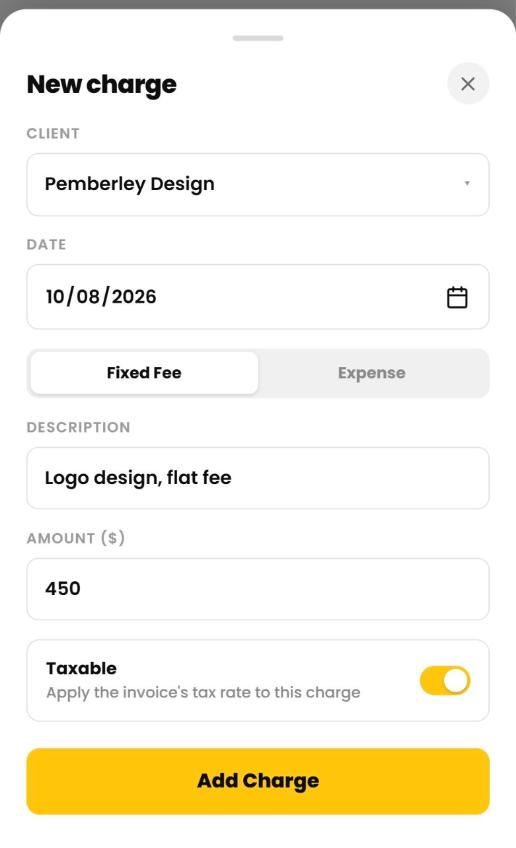
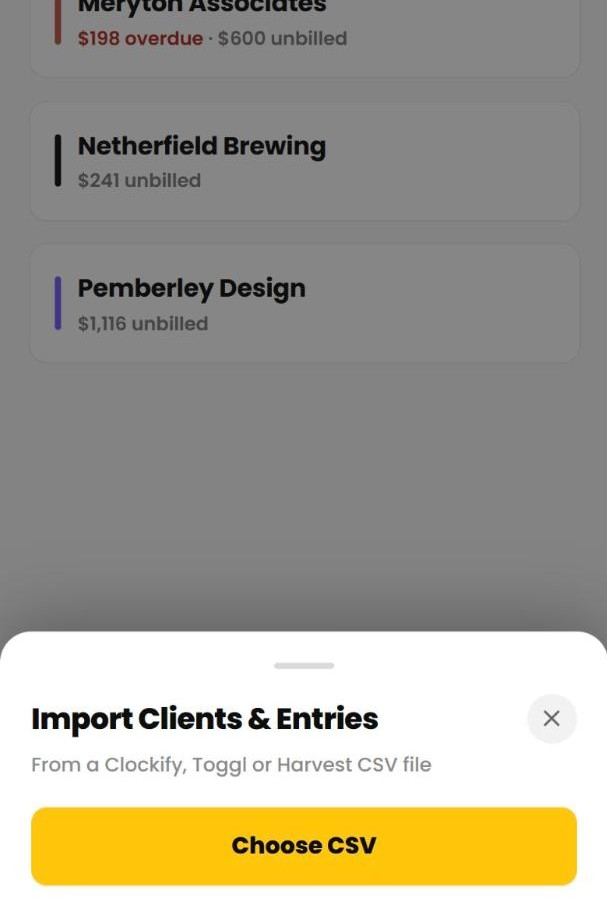
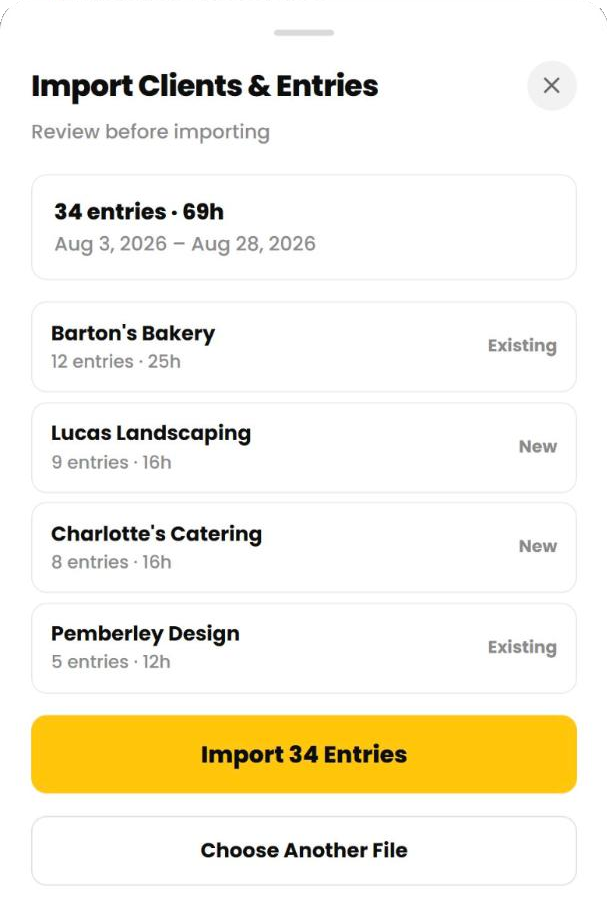

Cruxy / Support / Clients and projects
Clients and projects
Clients and projects organize your time and decide what you charge.
Add a client
- Tap Clients, then New.
- Enter the client's name and a first project.
- Choose a currency and your hourly rate. A rate of 0 makes the client non-billable, so no invoices can be made for them.
- Pick a color and tap Add Client.
Free includes 2 active clients. Archive one you're finished with, or go Pro for unlimited.

Edit a client's details
Tap a client, then the gear icon next to the name. You can change:
- Name, currency, hourly rate and color
- Billing name, email and address. These appear on the invoice, and the email is where invoices are sent.
- A tax rate for this client, if different from your default
- How invoice time is rounded for this client
Changing the hourly rate affects future entries only. Past entries keep the rate they were logged at.
You can't change a client's currency while it has unbilled time or charges. Invoice them or remove them first. Changing the currency doesn't convert the rate, so update it too.

Add and edit projects
Tap a client, then the Projects tab.
- Type a name in the box and tap Add to create a project.
- Tap a project to rename it, give it its own hourly rate, or archive it.
- View archived projects shows the ones you've put away. Archived projects don't appear when you log time, but their old entries stay.
A project rate replaces the client's rate for that project. Leave it blank to use the client's rate. A project can't make a non-billable client billable.

Archive and unarchive a client
Archive a client when the work is done. In the client's details, tap Archive and confirm.
- Archived clients are hidden from the timer and pickers and become read-only.
- Their time, projects and invoices stay. You can still invoice unbilled time and mark invoices paid.
- Archived clients don't count toward your 2 active clients on Free.
To bring one back, tap Show Archived Clients on the Clients tab, then Unarchive. On Free you need a free slot first, so archive another client or go Pro.
Delete a client
Deleting a client permanently deletes its projects and all of its time entries. It can't be undone. If you might need the history, archive the client instead.
Add a fixed fee or expense
Use a charge for something that isn't hourly, like a flat fee or a purchase you're passing on.
- Tap Entries, then New, then Charge.
- Choose the client and date, and whether it's a Fixed Fee or an Expense.
- Add a description and amount. Turn Taxable off if your invoice tax shouldn't apply to it.
- Tap Add Charge.
Unbilled charges appear on your next invoice for that client. A charge that's already on an invoice can't be edited. Delete the invoice first. The client needs an hourly rate above 0 to get charges.

Import from Clockify, Toggl or Harvest
Switching from another tracker? Import your time from its CSV export. Import is free on every plan.
- Export your time entries as a CSV from Clockify, Toggl or Harvest.
- In Cruxy, tap Clients, then Import, then Choose CSV.
- Review the summary: the entries, the date range, and which clients are new or existing.
- Tap Import.
Every row needs a date, a duration and a client. Entries already in Cruxy are skipped, so importing the same file twice is safe. If any rows can't be read, nothing is imported until you fix the file. The file can be up to 10 MB.
On Free, new clients beyond your 2 active clients are imported as archived. You can choose which to keep active, or go Pro.
Right after an import, tap Undo Import if you need to take it back. Once you close that screen, the option is gone.


If Cruxy asks you to choose clients
If a Free workspace has more than 2 active clients, for example after Pro ends, Cruxy asks you to pick the 2 to keep active. The others are archived with their data kept. You can't log new time until you choose. Going Pro again lifts the limit.